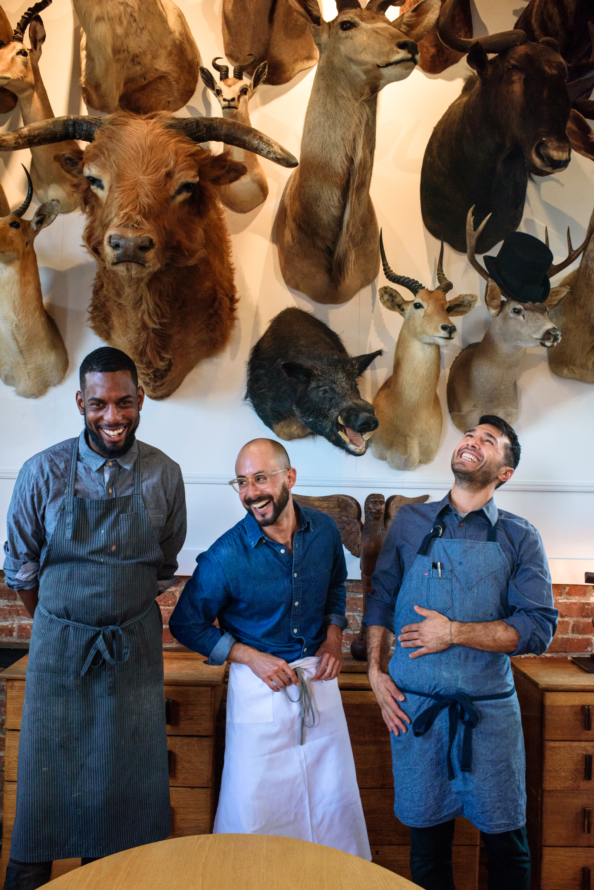
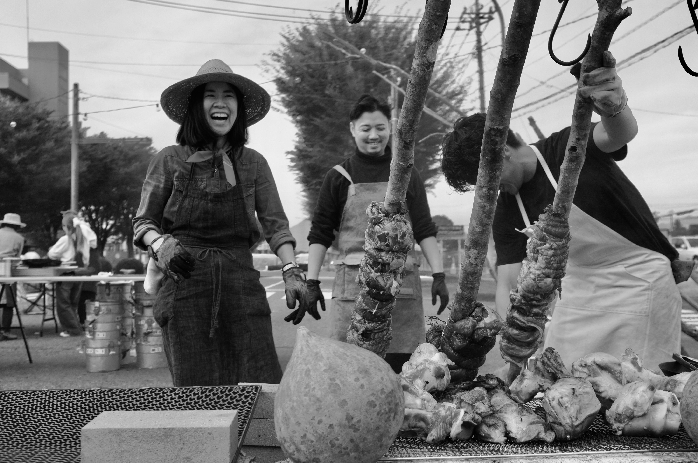

Seasonally inspired, rooted in place
My path in the culinary arts has been unconventional. It began in San Francisco's underground dining scene — early days at Lazy Bear — before moving through consulting and R&D work with Thumbtack and Thistle, and eventually striking out as a freelance chef.
Over the years I've built a wide-ranging skill set through a diverse array of projects, stages, and collaborations. I feel most at home in the farm-to-table tradition as embodied by Chez Panisse — cooking that begins with the integrity of the ingredient and ends at the table.
Notable experiences include Farmoon (Kyoto), Cignale Enoteca (Tokyo), Rintaro, Bar Jules, Bar Tartine, Chez Panisse, Pizzaiolo, Full Belly Farm, and cooking alongside Francis Mallman's team at The Pebble Beach Food & Wine Festival.





Intimate gatherings, artfully considered menus — each one shaped by the season and the occasion.
Full-service catering for cultural events, gallery openings, and private gatherings.
Pop-ups and joint projects with other chefs, artists, and venues. Interested in food at the intersection of culture, community, and craft.
Menu development and concept consulting for restaurants, startups, and food-forward projects.
Tell me what you have in mind.
Get in touch